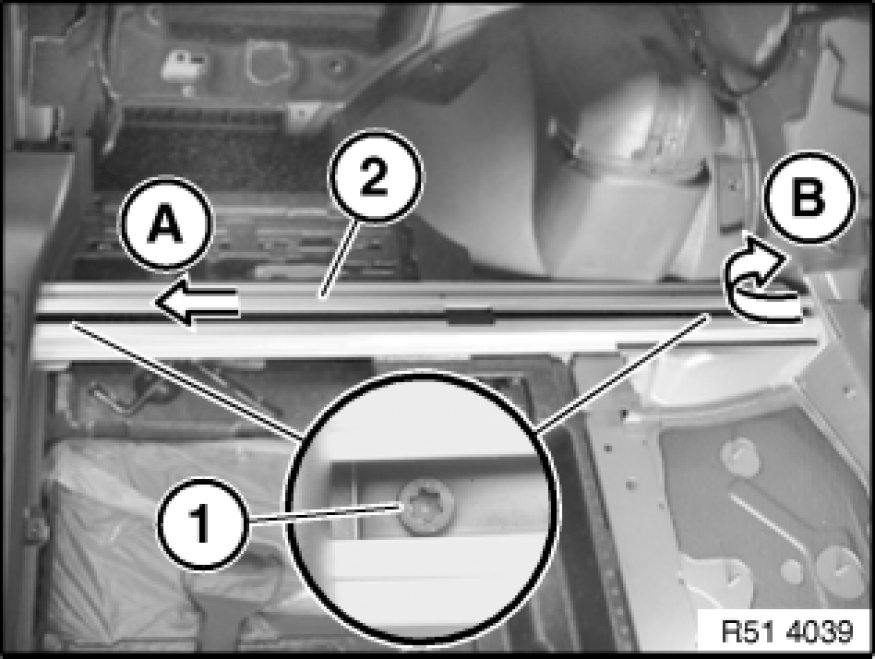
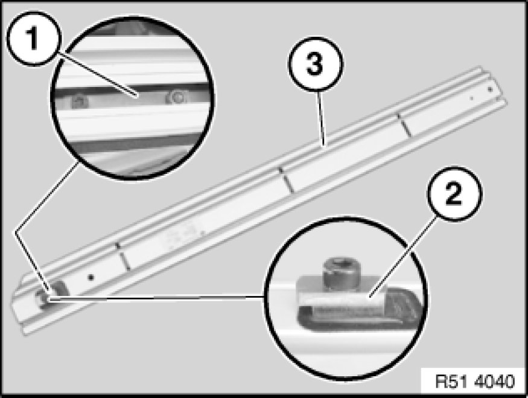

Removing and Installing/Replacing Left or Right Lashing Rail In Luggage Compartment Floor
51 47 135 - Removing and installing/replacing left or right lashing rail in luggage compartment floor

Necessary preliminary tasks:
- Remove inner window cavity cover strip Service and Repair
- Remove rear luggage compartment floor trim 51 47 101 Removing and Installing/Replacing Luggage Compartment Floor Trim Panel
- Remove front trim for luggage compartment floor Replacing Front Trim for Luggage Compartment Floor
- Remove top trim from tail panel 51 46 050 Removing and Installing/Replacing Top Trim on Rear Apron
- Remove luggage compartment wheel arch trim on left or right
Right side only:
- Remove storage compartment in luggage compartment on right Removing And Installing/Replacing Storage Compartment In Luggage Compartment on Right
Note:
The operation is described on the left side; proceed in the same way for the right side.

Release screws (1).
Lashing rail (2):
-A)
- Slide approx. 2 cm towards rear
-B)
- Feed out towards top front

Replacement:
If necessary, remove reinforcement plate (1) with guide (2) from lashing rail (3) and fit on new part.